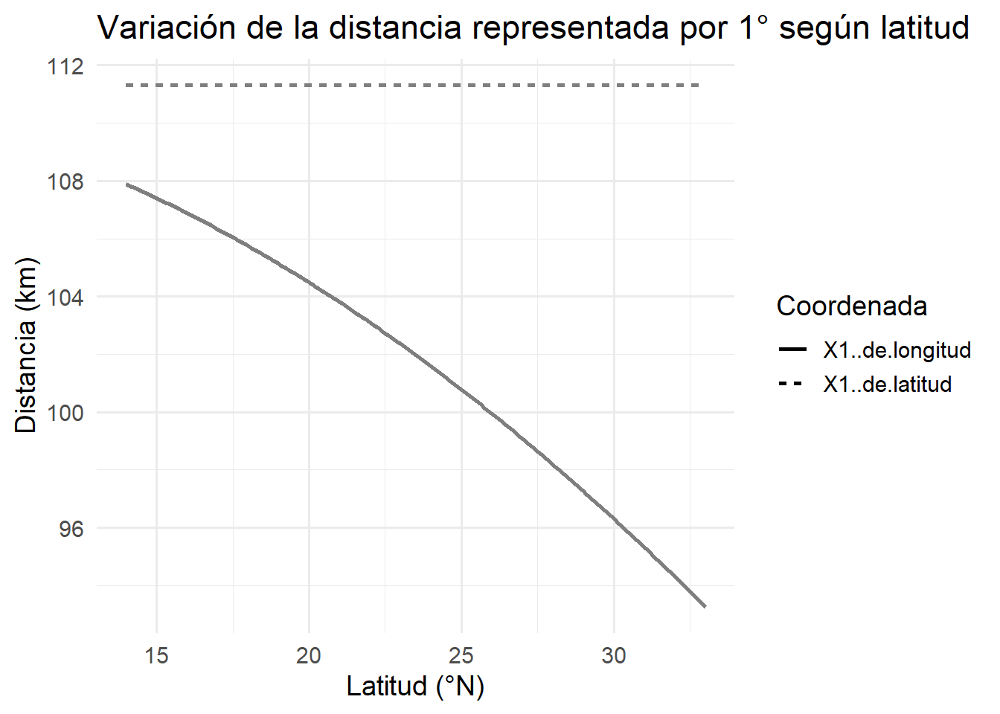

La base de datos georeferenciada de encinos se generó al integrar datos de Global Biodiversity Information Facility (GBIF) (GBIF.Org User, 2024) y de Red de Herbarios Mexicanos (Herbarios Mexicanos, 2024). No se realizaron filtros temporales, por lo que la base integrada contiene registros de 1791 a 2024. Para el caso de GBIF, se filtraron los registros que no presentaran problemas geoespaciales, que tuvieran coordenadas, que pertenecieran a México y el formato de descarga fue Darwin Core. Para el caso de la Red de Herbarios, se indicó que se incluyeran sinónimos y que se tomarán todas las colecciones, en este caso, se tienen registros de los siguientes herbarios: HUAP, MICH, TEX, ARIZ, UASLP, NMC, UNAM, MABA, LL, GreaterGood, USON, UCR, ASU, SD, COLO, F, BRIT, DAV, VT, FLD, NCSC, CalBG, NY, IBUG, Harvard, MOR, Sonoran Atlas, BCMEX, DES, HCIB, HNT, TAES, SBBG, USF, UNM, SRSC, SEINet, ZAC, NO, UTEP, KANU, IPN, UAN, CHRB, PH, UT, CM, IND, CIAD, NMCR, TTC, UNISIERRA, OBI, BRY, GA, EIU, ASC, ASDM, LSU, BRU, PAUH, RHM, CHAPINGO, DMNS, WIS, SJSU, BAYLU, WLM, CLEMS, SAT, CINC, HJAAA-FCB, USU, MIL, NTSC, TENN, SJNM, HPC, OKLA, WVW, UA, UAS, FLAS, LEA, DBG, UCOL, SDSU, VSC, APSC, VCU, PAC, SHIP, LFCC, BALT, WILLI, HUDC, RM, QMEX, RHNM, UNLV, UVSC, MIN, KE, MISSA, UAC, CIBNOR, CS.
Corrección taxonómica
Para estandarizar y validar la nomenclatura taxonómica de las especies presentes en la base de datos, se utilizó el backbone taxonómico de GBIF. Para ello, se utilizó la API de GBIF mediante el paquete rgbif (Chamberlain & Boettiger, 2017) en R v4.3.2 (Team, 2024). Con la función name_backbone(), se obtuvo el nombre aceptado, estatus taxonómico (aceptado o sinónimo), nivel taxonómico y nivel de confianza de la coincidencia.
Este procedimiento permitió homogeneizar los nombres científicos y detectar sinónimos o errores de nomenclatura, garantizando así la consistencia taxonómica en los análisis posteriores.
Limpieza de datos
Para la unión y limpieza de datos se utilizó R v.4.3.2 (Team, 2024) y el paquete tidyverse (Wickham et al., 2019), asi como para los subsiguientes procesos. Se tomarón registros de observaciones humanas, especimenes preservados, especimenes vivos y ejemplares herborizado. Se eliminaron registros que no se encontraran dentro de México y que estuvieran duplicados, es decir, que tuvieran las mismas coordenadas y nombre. Para la limpieza de coordenadas se utilizo la función clean_coordinates() del paquete CoordinateCleaner (zizka209?), el cual verifica si las coordenadas de los registros sean válidas, que no se encuentran dentro del radio de las capitales o cerca de los centroides del país, con misma latitud y longitud, cerca de museos e instituciones científicas, registros muy aislados respecto a los demás de la misma especie, puntos en el océano y con valor de (0,0).
Criterios de aceptación de especies
Por otra parte, se establecieron criterios para la inclusión de especies en los análisis. Se excluyeron aquellas que no son nativas. Las especies con más de 20 registros fueron conservadas. Aquellas con menos de 20 registros se mantuvieron únicamente si estaban incluidas en la filogenia a utilizar o si presentan una distribución restringida. Las especies con entre 10 y 20 registros, y que no eran de distribución restringida, fueron evaluadas en función de la representación espacial de su rango geográfico. Finalmente, las especies con menos de 10 registros y sin distribución restringida fueron eliminadas.
Obtención de estatus de conservación según la IUCN
Además se evaluó la categoría de cada especie dentro de la Lista Roja de Especies Amenazadas de la Unión Internacional para la Conservación de la Naturaleza (IUCN, 2025), con el paquete rredlist (Gearty & Chamberlain, 2025). Para ello, se utilizó una función personalizada que automatiza el proceso de extracción de la categoría de conservación. La función toma como entrada el epíteto específico de cada especie y consulta la API para obtener la evaluación más reciente disponible.
Se obtuvieron dos elevaciones, la primera con el paquete elevatr, donde se definió una precisión de aproxidamente 1.2 km (podriamos mejorarla, con z=15, que tiene una precision de 4.8m, o tal vez borrarla); la segunda con el Continuo de Elevacion Mexicano (CEM) de INEGI, el cual tiene una resolución de 15 m (cita). Asimismo, el municipio y estado para cada registro se obtuvo a través de un archivo tipo shape que contiene la división política municipal (Instituto Nacional de Estadística y Geografía (INEGI), 2022).
Para las provincias biogeográficas se tomo la clasificación hecha por Morrone et al. Morrone et al. (2022), la cual clasifica a México en 14 provincias con base a ecorregiones, las cuales combinan criterios climáticos, geológicos y bióticos (Morrone et al., 2022).
3.2 Evaluación de sesgo de muestreo/escala
Escalas consideradas
Se evaluaron cinco escalas espaciales correspondientes a celdas de 15, 25, 35, 45 y 50 kilómetros de lado (Ver Baldwin et al. (2017)). Debido a que las capas utilizadas se encontraban en un sistema de coordenadas geográficas (EPSG:4326) con datum WGS84, estas dimensiones se expresaron en grados decimales. Bajo este sistema, 1° de latitud equivale aproximadamente a 111.32 km en cualquier punto del planeta. Sin embargo, la longitud de 1° de longitud varía en función de la latitud, disminuyendo conforme se avanza hacia los polos debido a la convergencia de los meridianos. En el caso de México, esta distancia va desde ~107 km en el sur (14°N) hasta ~93 km en el norte (33°N). Esta variación implica que las celdas generadas en grados decimales no tienen una extensión uniforme en kilómetros a lo largo del territorio nacional: son más anchas en el sur y más estrechas en el norte. La
Figura 3.1 ilustra esta variación, mostrando cómo se mantiene constante la longitud de 1° de latitud, mientras que la longitud de 1° de longitud disminuye con la latitud, por lo que las áreas cubiertas por cada celda difieren ligeramente en superficie real.
library(ggplot2)library(reshape2)# Latitudes para Méxicolatitudes <-seq(14, 33, length.out =200)earth_radius_km <-6371deg_to_rad <- pi /180# Calcular longitudeslength_lon_km <- deg_to_rad * earth_radius_km *cos(latitudes * deg_to_rad)length_lat_km <-rep(111.32, length(latitudes))# Data framedf <-data.frame(Latitud = latitudes,`1° de longitud`= length_lon_km,`1° de latitud`= length_lat_km)df_long <-melt(df, id.vars ="Latitud")# Plotggplot(df_long, aes(x = Latitud, y = value, color = variable, linetype = variable)) +geom_line(size =1) +scale_color_manual(values =c("1° de longitud"="orange", "1° de latitud"="blue")) +labs(title ="Variación de la distancia representada por 1° según latitud",x ="Latitud (°N)", y ="Distancia (km)",color ="Coordenada", linetype ="Coordenada" ) +theme_minimal(base_size =14)

Figure 3.1: Variación de la distancia representada por un grado según la latitud en México. La longitud de un grado de latitud se mantiene constante (~111.32 km), mientras que la de un grado de longitud disminuye con la latitud.
Representación de la heterogeneidad de las provincias biogeográficas por escala
Para evaluar la representación espacial de cada provincia biogeográfica, se utilizó el shapefile generado por Morrone et al. (2017, 2022). Se elaboraron gráficas de barras con el paquete ggplot2 (Wickham, 2016) para cada una de las escalas espaciales consideradas. En estas gráficas se muestra el número de cuadros que representan a cada provincia, tanto considerando todos los cuadros de la grilla, independientemente de la presencia de registros, como únicamente aquellos cuadros que contienen registros de especies.
Curvas de rarefacción
Adicionalmente, se generaron curvas de rarefacción acumulativa por provincia biogeográfica y por escala espacial con el fin de evaluar la intensidad de muestreo en relación con la riqueza de especies. Estas curvas permiten estimar el número de celdas necesarias para alcanzar una representación relativamente estable de la riqueza observada en cada región, bajo el supuesto de un muestreo aleatorio (Baldwin et al., 2017).
Para ello, se implementó un conjunto de funciones personalizadas en R que realizan los siguientes pasos: (1) intersección de los registros de especies con las celdas de cada grid, (2) muestreo aleatorio repetido de celdas dentro de cada provincia biogeográfica, (3) cálculo de la riqueza de especies para cada número acumulado de celdas y (4) graficación de las curvas promedio de acumulación a través de múltiples repeticiones (n = 50). Este procedimiento se aplicó a todos los grids disponibles, generando una curva de rarefacción para cada combinación de provincia y escala.
Relación registros vs riqueza
Para explorar la relación entre la riqueza de especies y el número de registros disponibles, se generaron curvas de acumulación a partir de la base de datos depurada. Primero, se ordenaron aleatoriamente los registros para evitar sesgos por el orden original de los datos. Luego, se contabilizó el número de especies únicas conforme se iban incorporando progresivamente más registros, tanto de manera secuencial como mediante muestreo aleatorio sin reemplazo. Para ello, se implementaron funciones personalizadas en R v.4.3.2 (Team, 2024) que permitieron calcular la riqueza acumulada (número de especies únicas) para cada número incremental de registros. Se graficaron ambas curvas —una basada en el orden original aleatorizado y otra mediante muestreo aleatorio en cada iteración— para comparar los patrones de acumulación de riqueza en función del esfuerzo de muestreo.
3.3 Construcción del marco filogenético
Para aplicar el criterio de exclusión de especies descrito en el punto 1, así como para calcular la riqueza, endemismo ponderado de especies presentes en el árbol y estimar su diversidad filogenética, se utilizó un árbol filogenético global del género Quercus elaborado por Hipp et al. (2020). Este árbol, calibrado en el tiempo y con longitudes de rama medidas en millones de años, fue generado a partir de datos RAD-seq de 632 individuos y se construyó mediante análisis de máxima verosimilitud. Para la datación, se aplicaron modelos relajados de reloj molecular con calibraciones fósiles, y se generó una versión del árbol con una sola muestra por especie.
El árbol está disponible públicamente a través del repositorio del proyecto en GitHub (A. Hipp, 2025) y también forma parte del proyecto Open Tree of Life (Hinchliff et al., 2015).
Por otra parte, se empleó el paquete ape v5.8 (Paradis & Schliep, 2019) para podar el árbol filogenético, eliminando las especies ausentes en la base de datos y conservando únicamente aquellas coincidentes.
3.4 Índices de biodiversidad
Se calcularon 3 índices de biodiversidad: riqueza de especies, endemismo ponderado y diversidad filogénetica. Para calcularlos se utilizaron rasters de distribución de especies, los cuales fueron generado a partir de la base de datos, el árbol filogénetico de Hipp et al. (2020) y el paquete de R ‘Phyloraster’(Alves-Ferreira et al., 2023). Estos índices se generaron para 5 escalas (15, 25, 35, 45, 50 km).
La riqueza de especies se calculó con Equation 3.1, donde Sc es el valor de presencia (1) o ausencia (0) de la especie, c y C el subconjunto de taxones que ocurren en una región determinada (Alves-Ferreira et al., 2023).
\[
SR = \sum_{c \in C} S_c
\tag{3.1}\]
El endemismo ponderado evalúa el rango de cada especie a una región, en función de la proporción de su rango total que se encuentra dentro de dicha región, este es calculado a través de la Equation 3.2. Donde r es el rango local, Rc es el rango total, c y C representan el subconjunto de taxones que ocurren en una región determinada. En el caso de phyloraster, el cálculo se realiza con el área de las celdas, ya que en la mayoría de casos se trata a las celdas como si fueran del mismo tamaño (Alves-Ferreira et al., 2023).
\[
WE = \sum_{c \in C} \frac{r_C}{R_c}
\tag{3.2}\]
La diversidad filogenética de Faith (Faith, 1992) es calculada a través de la suma del largo de las ramas de todas las especies en una región dada, como se muestra en la ecuación (eq:faith_pd?). Donde Lc corresponde a la longitud de la rama de cada especie, así como c y C representan el conjunto de ramas que se encuentran en una región específica.
\[
PD = \sum_{\{c \in C\}} L_c
\] {eq:faith_pd}
CANAPE (PENDIENTE)Regression models? (PENDIENTE)
Alves-Ferreira, G., Mota, F. M. M., Talora, D., Oliveira, C., Solé, M., & Heming, N. M. (2023). Phyloraster: An r package to calculate measures of endemism and evolutionary diversity for rasters. Ecography, e06902. https://doi.org/10.1111/ecog.06902
Baldwin, B. G., Thornhill, A. H., Freyman, W. A., Ackerly, D. D., Kling, M. M., Morueta-Holme, N., & Mishler, B. D. (2017). Species richness and endemism in the native flora of California. American Journal of Botany, 104(3), 487–501. https://doi.org/10.3732/ajb.1600326
Barrett, T., Dowle, M., Srinivasan, A., Gorecki, J., Chirico, M., Hocking, T., & Schwendinger, B. (2024). Data.table: Extension of ‘data.frame‘. https://CRAN.R-project.org/package=data.table
Hinchliff, C. E., Smith, S. A., Allman, J. F., Burleigh, J. G., Chaudhary, R., Coghill, L. M., Crandall, K. A., Deng, J., Drew, B. T., Gazis, R., Gude, K., Hibbett, D. S., Katz, L. A., Laughinghouse, H. D., McTavish, E. J., Midford, P. E., Owen, C. L., Ree, R. H., Rees, J. A., … Cranston, K. A. (2015). Synthesis of phylogeny and taxonomy into a comprehensive tree of life. Proceedings of the National Academy of Sciences, 112(41), 12764–12769. https://doi.org/10.1073/pnas.1423041112
Hipp, A. (2025). Andrew-hipp/global-oaks-2019.
Hipp, A. L., Manos, P. S., Hahn, M., Avishai, M., Bodénès, C., Cavender-Bares, J., Crowl, A. A., Deng, M., Denk, T., Fitz-Gibbon, S., Gailing, O., González-Elizondo, M. S., González-Rodríguez, A., Grimm, G. W., Jiang, X.-L., Kremer, A., Lesur, I., McVay, J. D., Plomion, C., … Valencia-Avalos, S. (2020). Genomic landscape of the global oak phylogeny. New Phytologist, 226(4), 1198–1212. https://doi.org/10.1111/nph.16162
Hollister, J., Shah, T., Nowosad, J., Robitaille, A. L., Beck, M. W., & Johnson, M. (2023). Elevatr: Access elevation data from various APIs. https://doi.org/10.5281/zenodo.8335450
Paradis, E., & Schliep, K. (2019). Ape 5.0: An environment for modern phylogenetics and evolutionary analyses in R. Bioinformatics, 35, 526–528. https://doi.org/10.1093/bioinformatics/bty633
Pebesma, E. (2018). Simple Features for R: Standardized Support for Spatial Vector Data. The R Journal, 10(1), 439–446. https://doi.org/10.32614/RJ-2018-009
Team, R. C. (2024). R: A language and environment for statistical computing. https://www.R-project.org
Wickham, H. (2016). ggplot2: Elegant graphics for data analysis. Springer-Verlag New York. https://ggplot2.tidyverse.org